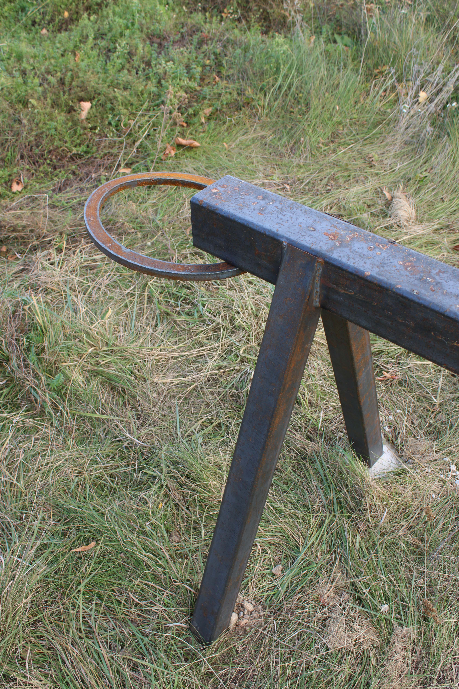
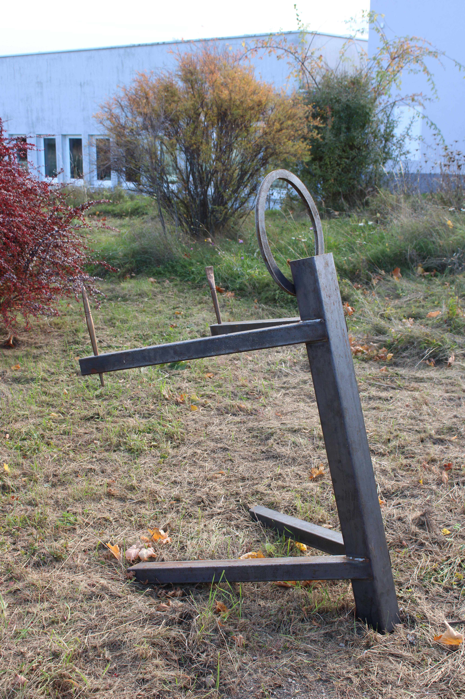
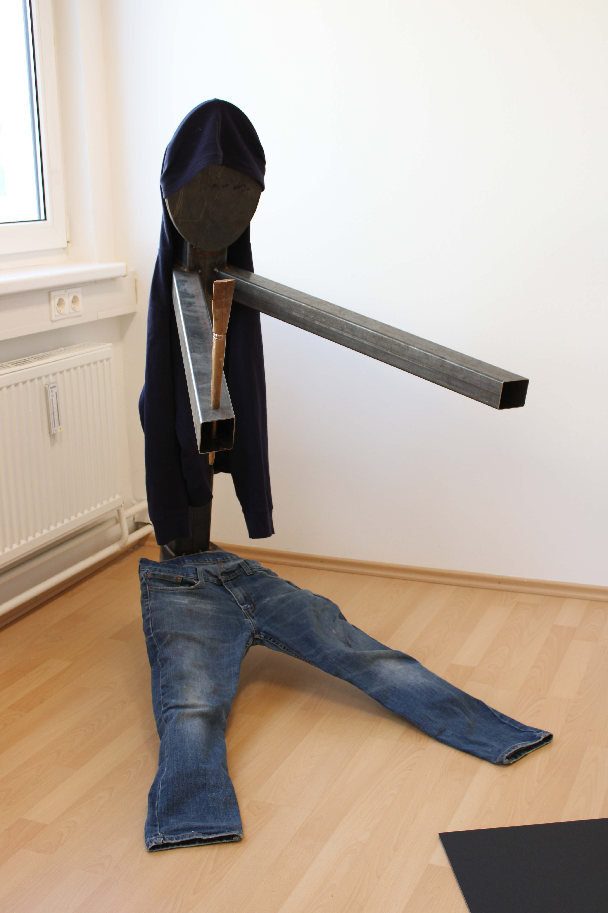
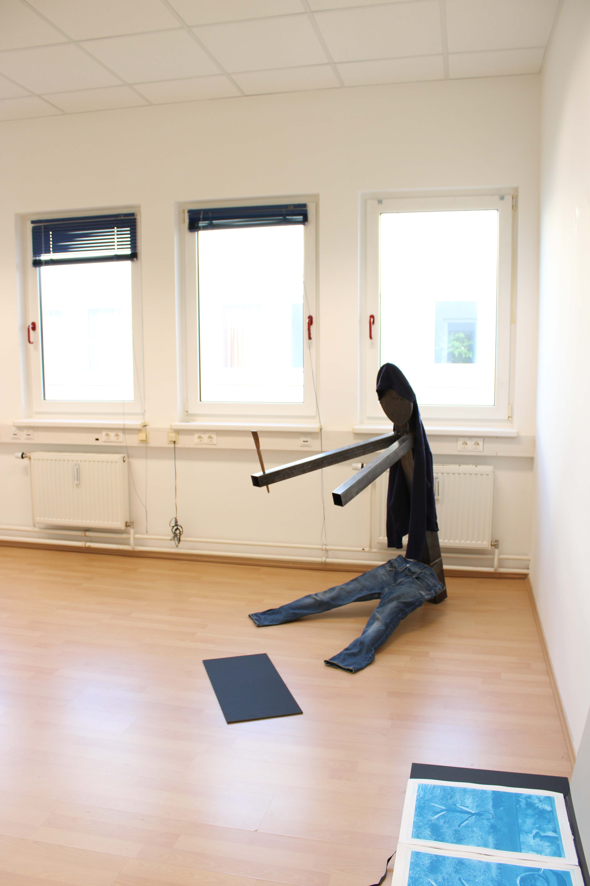
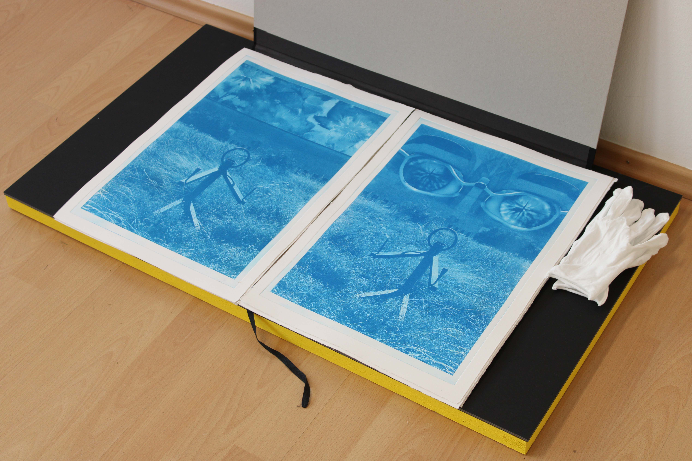
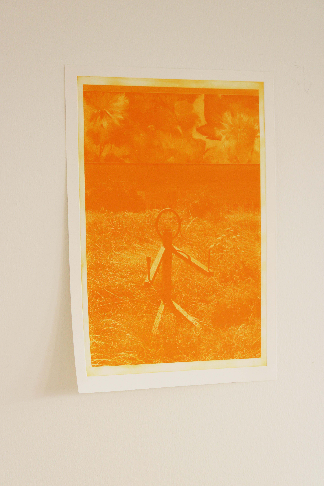

Maler und Hunde
2026, Ternitz, Lower Austria, AT







The spacual intervention titled Maler und Hunde, included 5 metall sculptures on an empty field, and an installation, including another sculpture and photoetchings on paper referring to the outside presentation, and beeing presented in three different ways: Sticked to the walls, as a teenage room poster reference, on freestanding metallframes, refereing to the same materials as the scultpures and beeing alsmost own beeings next to the sculptures, and third presented on the floor in big folders, to look through. The project is reffereing to the situation of the painter, and the strong feeling of feeling stuck in the medium, raising questions of the possibly to leave the medium.